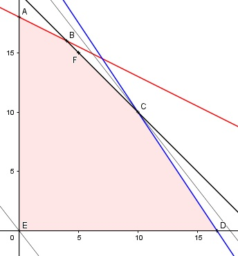

Aufgabe 90 Ein Unternehmer stellt Zusatzbauteile für Computer her. Für Bauteil A braucht er in der Herstellung 10 Minuten, für Bauteil B 20 Minuten bei einer maximalen Arbeitszeit von 6 h. Für die Materialkosten, Bauteil A 3 €, Bauteil B 2 €, stehen ihm 50 €/Tag zur Verfügung. Bietet er Bauteil A für 9 €, Bauteil B für 7 € an, kann er insgesamt 20 Bauteile/Tag verkaufen. a) Wie viele Bauteile A und B muss er täglich herstellen, wenn er möglichst hohe Einnahmen haben will? b) Wie hoch ist sein maximaler Gewinn G? c) Wie viele Bauteile A und B muss er täglich herstellen, wenn er bei möglichst kurzer Arbeits- zeit mindestens 150 € einnehmen will? Wie lange ist seine Arbeitszeit? x = Bauteil A y = Bauteil B 6 h = 6 * 60 min = 360 min Bedingungen: 10x + 20y ≤ 360 3x + 2y ≤ 50 x + y ≤ 20 x ≥ 0 x ∈ ℕ0 y ≥ 0 y ∈ ℕ0 Zielfunktion: Erlös E = 9x + 7y Gewinn G = (9 - 3)x + (7 - 2)y = 6x + 5y Randgerade 1: 10x + 20y = 360 Randgerade 2: 3x + 2y = 50 Randgerade 3: x + y = 20

Die Eckpunkte A, B, C, D und E bilden das Planungsgebiet, das alle Ungleichungen erfüllt. Eckpunkt C ist der Schnittpunkt der Randgeraden 2 und 3: 3x + 2y = 50 (1) x + y = 20 (2) (1) + (2)*(-2): 3x + 2x = 50 -2x - 2y = - 40 ----------------- x = 10 In (2) eingesetzt: 10 + y = 20 |-10 y = 10 C(10|10). Die Parallele der Zielfunktion E liegt in C am höchsten --> Emax = 9 * 10 + 7 * 10 = 160 € Für x = 10 und y = 10 wird E am größten. b) Der Gewinn ist dann am größten, wenn der Erlös maximal ist. Gmax = 6 * 10 + 5 * 10 = 110 € c) Punkt F ist der Schnittpunkt von: x + y = 20 (1) mit 9x + 7y = 150 (2) Aus (1): x + y = 20 |-y x = 20 - y Eingesetzt in (2): 9 * (20 - y) + 7y = 150 180 - 9y + 7y = 150 |+2y - 150 30 = 2y |:2 y = 15 Eingesetzt in (1): x + 15 = 20 |-15 x = 5 F hat die Koordinaten (5|15). E = 9 * 5 + 7 * 15 = 150 € Wenn er 5 Bauteile A und 15 Bauteile B herstellt, erzielt er eine Einnahme von 150 €. Die Arbeitszeit beträgt dann 5 * 10 + 15 * 20 = 350 Minuten.